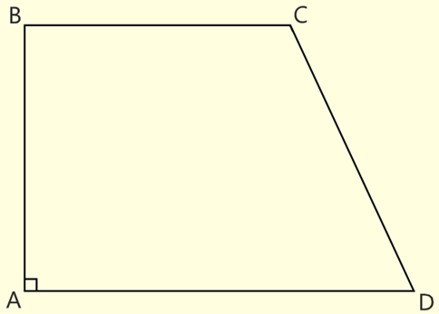

*
Трапеция
# Трапеция - выпуклый четырёхугольник, у которого две стороны параллельны, а две другие стороны не параллельны (ВС || AD).
# Параллельные стороны трапеции называют основанием, а не параллельные - боковыми сторонами.
# Сумма смежных углов трапеции равна 180 градусов.
# Средняя линия трапеции - отрезок, соединяющий середины боковых сторон этой трапеции.
# Средняя линия трапеции равна полусумме оснований этой трапеции.
# Средняя линия трапеции параллельна основаниям этой трапеции.
Формулы площади трапеции
-
Площадь трапеции равна произведению полусуммы оснований на высоту, проведенную
к основанию этой трапеции.
(S = (BC + AD) / 2 * BH)
-
Площадь трапеции равна произведению среней линии на высоту, проведенную
к основанию этой трапеции.
(S = LM * BH)

Свойства трапеции
-
Средняя линия трапеции проходит через середины диагоналей этой трапеции
(AN = NC, BT = TD).
-
Диагонали трапеции делят её на 4 треугольника. Два из них, прилежащие к основаниям, подобны (BOС подобен AOD).
Два других, прилежащие к боковым сторонам, имеют одинаковую площадь (S(AOB) = S(COD)).
Прямоугольная трапеция
# Прямоугольная трапеция - трапеция, имеющая прямые углы у одной из боковых сторон.
# Прямоугольная трапеция обладает всеми свойствами обычной трапеции.

Равнобедренная трапеция
# Равнобедренная трапеция - трапеция, у которой боковые стороны равны.
# Равнобедренная трапеция обладает всеми свойствами обычной трапеции.
# В равнобедренной трапеции углы при основаниях равны
(<BAD = <CDA, <ABC = <BCD).
# В равнобедренной трапеции диагонали равны (AC = BD).